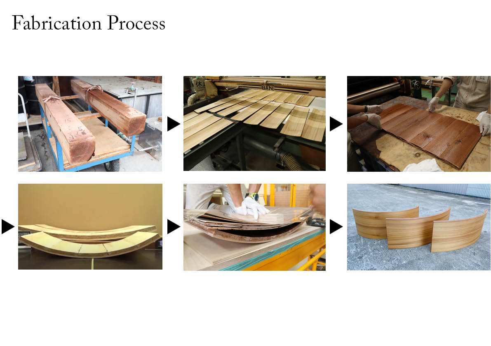

本モックアップは、**Self-Shaping Wood（自己変形木材）**と日本の成形合板技術を融合した、新しい曲面木質シェル構法の実証を目的として製作したものである。従来、曲面CLTの製作には大型型枠やCNC切削、熱曲げ加工などが必要であったが、本研究では木材が乾燥時に生じる収縮を利用し、型枠を用いずに木材自らが曲面へと変形するセルフシェーピング技術を活用することで、低環境負荷かつ低コストな曲面構法を提案している。 モックアップは2.2m×2.2mの実大スケールで設計され、17枚の異なる曲率を持つCLTパネルによって構成されている。各パネルは目標曲率に応じて積層厚さや含水率を設計プログラムによって算出し、積層・乾燥・自己変形・ロック層の接着という一連の製作プロセスを経て製造した。これにより、多様な曲率を高い再現性で実現するとともに、設計から製造までを一貫してデジタル化したワークフローを構築している。 さらに、完成したモックアップでは構造解析および製作精度の検証を実施し、曲率半径や積層構成が形状精度や構造性能に与える影響を評価した。その結果、自己変形段階では高い形状精度が得られることを確認するとともに、ロック層接着時の変形挙動など実用化に向けた課題を明らかにした。本研究は、自然素材の特性を積極的に設計へ取り込み、持続可能で自由度の高い木質曲面建築の新たな設計・製造手法を提案するものである。
project
Self-Shaping Wood Revolving Door
term
June. 2024 - Sep. 2024
type
Pavilion
credit
Hiroki Awaji